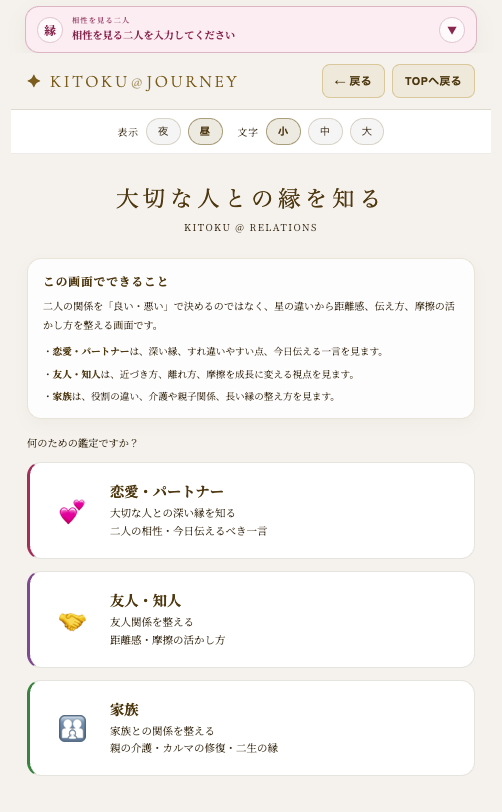
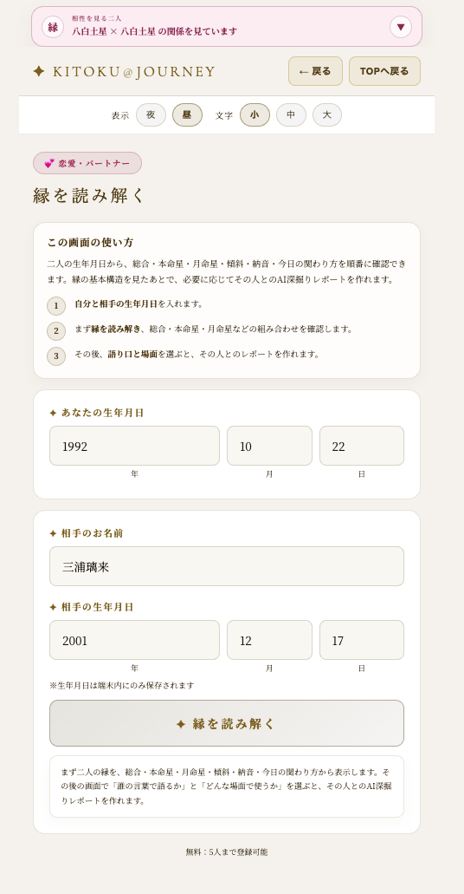
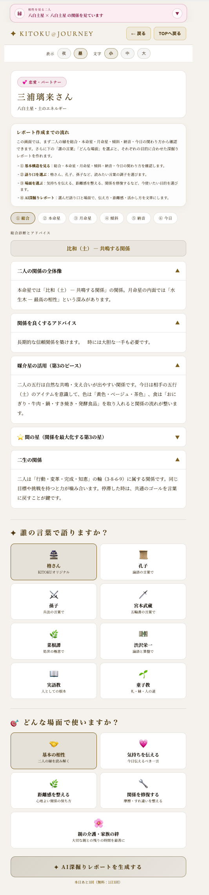
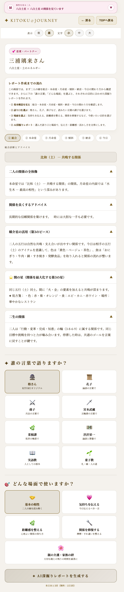
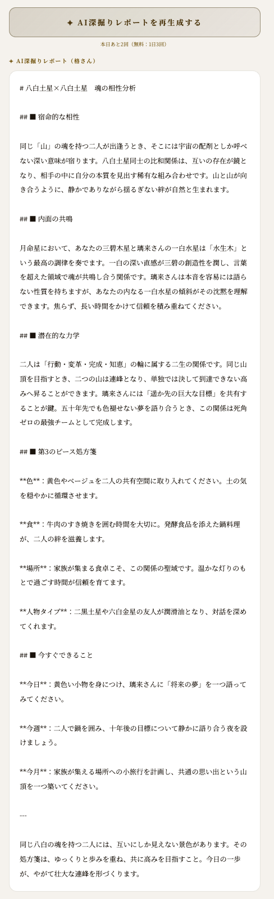

人間関係・商談を
うまくいかせる
気の合う人、なぜか噛み合わない人。人間関係にも、星の理屈があります。でも大事なのは「相性の良し悪し」ではありません。合わない相手こそ、つなぎ方を知れば大きな力になります。
相性診断で「合わない」と出ても、諦めるためではありません。むしろ合わない相手ほど、あなたの死角を埋めてくれます。その活かし方を手渡す回です。
自分を知り、相手を知り、その上で接する
KITOKUの人間関係の基本は「自分を知る → 相手を理解する → その上で接する」です。相手を変えようとする前に、まず相手の星を知る。噛み合わなさの理由が見えるだけで、接し方は変わります。
人間関係の第一歩は、相手を変えることではなく「知ること」。相手がどんな星か分かると、距離感・伝え方・摩擦の活かし方が見えてきます。
| タイプ | 呼び名 | 特徴 |
|---|---|---|
| 相生 | 共鳴のサポーター | 気の合う相手。ただし似た方向なので死角が生まれやすい。 |
| 比和 | 双子の同志 | 同じ星同士。深く理解し合える一方、同じ弱点を増幅しやすい。 |
| 相剋 | 異能のブレイクスルー | 合わないからこそ死角ゼロ。間に第3の星を挟めば最強になる。 |

気が合う二人は似ているぶん、同じ弱点を持ちやすい。逆に相剋の二人は、互いの死角を補い合えます。相性は良し悪しではなく、どんな組み合わせかを知ることが大事です。
合わない相手こそ宝 - 間の星
相剋の関係でも、間に第3の星を挟むと、摩擦は最強のエネルギーに変わります。アプリでは、二人の相性から「間の星」を自動で表示します。
相剋は宝の場所
合わない相手は、ダメな相手ではありません。あなた一人では見えない死角を教えてくれる存在です。間の星を使えば、ぶつかりは補い合いに変わります。

間の星は、色・食・場所・その星を持つ人として使えます。合わなさを否定せず、二人の間に「翻訳者」を置く感覚です。
色と食で関係を整える
商談・交渉・仲直りの時は、二人の「間の星」の色を身につけ、その星の味覚の食を共にすると、摩擦が和らぎ、話がまとまりやすくなります。
| 星 | 味覚 | 使い方 |
|---|---|---|
| 一白 | 塩味 | 水・海のもの・静かな場 |
| 二黒・五黄・八白 | 甘味 | 鍋・すき焼き・発酵食品・落ち着いた食卓 |
| 三碧・四緑 | 酸味 | 柑橘・酢の物・風通しの良い場所 |
| 六白・七赤 | 辛味 | 白・金・ピンク・会話が弾む飲食 |
| 九紫 | 苦味 | コーヒー・お茶・赤や光の要素 |
難しい理屈より、まず場を整えること。間の星の色の服を着て、その味の食事を一緒にとるだけでも、空気は変わります。

相手に合わせた接し方
同じ「褒める」でも、相手の星で響く言葉は違います。相手の星を知ると、かける言葉、距離の取り方、任せ方が変わります。
| 系列 | 星 | 響く褒め方 |
|---|---|---|
| 天数系列 | 三碧・六白・九紫 | 能力・スピードを褒める。「頭の回転が速い」「決断が早い」 |
| 地数系列 | 二黒・五黄・八白 | 信頼を褒める。「任せれば安心」。元気ですね、は響きにくい。 |
| 人数系列 | 一白・四緑・七赤 | 存在を褒める。「いるだけで場が和む」「優しいですね」 |
事業や活動を広げたい時、キーパーソンになるのは自分の同会星を持つ人。さらに二生の関係の人を右腕・左腕に置くと、組織の循環が作りやすくなります。
自分が言葉を変える。距離を変える。間に第3の星を置く。相手を責める前に、こちらの使い方を変えるのがKITOKUの姿勢です。
こじれた糸をほどくのは、正しさだけではありません。「ごめんなさい」「お願いします」が言える器が、関係を修復する入口になります。
同じ相性を、8人の賢者の語り口で読む
relationsの相性レポートは「誰の言葉で語るか」を選べます。同じ二人の相性でも、語り口を変えると受け取るものが変わります。
| 語り手 | 語り口 |
|---|---|
| 格さん | KITOKUオリジナル。やさしく現代的に。 |
| 孔子 | 論語の言葉で。仁・礼・和。 |
| 孫子 | 兵法の言葉で。戦わずして勝つ、布陣。 |
| 宮本武蔵 | 五輪書の言葉で。実戦と間合い。 |
| 菜根譚・渋沢栄一 | 処世、道徳と経済の両立。 |
| 実語教・童子教 | 人としての根本、礼・縁・人の道。 |
基本の相性、気持ちを伝える、距離感を整える、関係を修復する、親の介護・家族の絆。目的によって同じ相性の読み方が変わります。

AI深掘りレポート - 二人だけの関係を文章で
基本の相性を見たあと、AI深掘りレポートでは、その二人固有の関係を文章化できます。宿命的な相性、内面の共鳴、潜在的な力学、第3のピース、今日・今週・今月の一歩まで出ます。
まずは無料の基本相性で、二人の構造とつなぎ方を見ます。深く言葉で味わいたい時に、AI深掘りレポートを使います。

まとめ - 合わなさを、つなぎ方に変える
核心教義
相手を変えようとしない。自分が変わることで、相手も変わる。そして「ごめんなさい」「お願いします」が言える器が、こじれた糸をほどきます。
星の相性は、人を「合う・合わない」で分けるためのものではありません。相手を知り、自分が一歩歩み寄るための地図です。合わない誰かとの間に、そっと第3の星を置いてみてください。